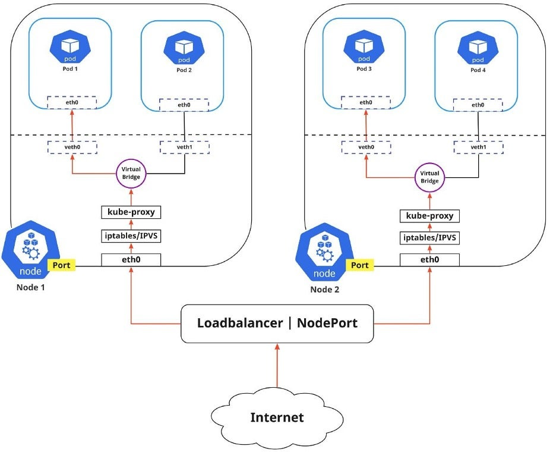
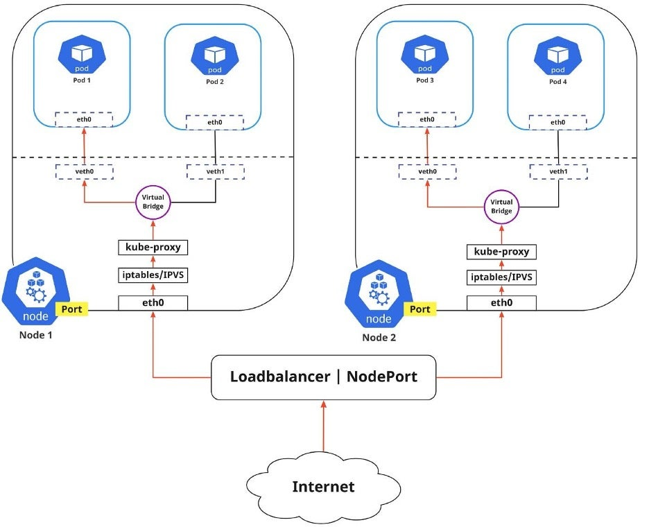

容器编排
容器技术
Namespace
Namesapce：资源隔离和虚拟化。
- UTS
- IPC
- PID
- Network
- Mount
- User
Cgroup
文件系统
网络
Docker
docker LXC, namespace, cgroups, 资源隔离与安全保障
docker client/server： REST API

docker组件：
- 镜像（Image）
- 容器（Container）
- 仓库（Repository）

https://www.backblaze.com/blog/vm-vs-containers/
https://docs.docker.com/get-started/overview/
容器的优点
面向产品：简化交付
面向开发：简化环境配置
面向测试：多版本测试
面向运维：环境一致性（一次构建、代码与配置分离）
面向架构：自动化扩容（微服务）
不可变基础设施：用替换代替变更
安装Docker Engine
Ubuntu
# install necessray tools
sudo apt-get install apt-transport-https ca-certificates \
curl gnupg-agent software-properties-common
curl -fsSL https://download.docker.com/linux/ubuntu/gpg | sudo apt-key add -
sudo apt-key fingerprint 0EBFCD88
# Add repository
sudo add-apt-repository \
"deb [arch=amd64] https://download.docker.com/linux/ubuntu \
$(lsb_release -cs) \
stable"
# install docker
sudo apt install docker-ce docker-ce-cli containerd.io docker-compose
https://learnku.com/articles/34941
Fedora/CentOS
目前支持Fedora ==34/35/36==版本和CentOS ==7/8/9==（centos-extras仓库需要启用）1。
yum install -y yum-utils # dnf -y install dnf-plugins-core
yum-config-manager --add-repo \
https://mirrors.aliyun.com/docker-ce/linux/centos/docker-ce.repo
# dnf config-manager --add-repo
# https://mirrors.aliyun.com/docker-ce/linux/fedora/docker-ce.repo
yum install docker-ce docker-ce-cli containerd.io docker-compose-plugin
systemctl enable --now docker # start and enable
移除旧版本docker
yum remove docker docker-latest \
docker-client docker-client-latest \
docker-common \
docker-logrotate docker-latest-logrotate \
docker-engine
位于
/var/lib/docker的镜像、容器、卷和网络等数据不会被移除。
Windows
安装Doker Desktop，需要启用Hyper-V/WSL2支持。
管理镜像
docker pull centos[:tag] # get docker iamge from DockerHub
docker images # show local images
docker save -o centos.tar centos # save image as archive
docker load --input centos.tar # load image from archive
docker rmi [ID|tag] # remove image
docker rmi $(docker images -q) # remove all iamges
Ubuntu（不包括WSL发行版）不支持
root账号，因此需要使用sudo运行命令。
运行容器

docker run [--name NAME] centos[:latest] echo "Hello World"
docker run --name mydocker -d -t -i centos /bin/bash
# [start,stop]
docker start mydocker # start an existing iamge
docker ps [-a] # show docker instance (and history process)
-d,--detach：Run container in background and print container ID.--network <net>：Connect a container to a network.--name <name>：Assign a name to the container.-e, --env <vars>：设置环境变量；-i, --interactive：Keep STDIN open even if not attached--ip string：IPv4 address (e.g., 172.30.100.104)-t, --tty：Allocate a pseudo-TTY-h, --hostname string：Container host name
查看容器的输出信息：
docker logs [OPTIONS] CONTAINER
进入容器
attach
连接到docker的进程。
docker attach mydocker
在我们使用
attach进入容器的时候，如果同时有多个窗口attach到同一个容器的时候，所有窗口都会同步显示。某个窗口因命令阻塞时,其他窗口也无法执行操作。一个窗口执行exit，则容器就推出运行。
nsenter
PID=$(docker inspect --format "{{ .State.Pid }}" mydocker)
nsenter --target $PID --mount --uts --ipc --net --pid
exec
通过docker让容器执行命令。
docker exec mydocker ln -sf target destfile
容器中执行命令的返回值将通过上述命令返回。
进入容器：
docker exec -it mydocker /bin/bash
此时重新在容器中启动了一个shell。
删除容器
docker rm [id|name]
docker run --rm centos /bin/echo "One" # remove after stop
# 执行完命令后退出
docker kill $(docker ps -a -q) # kill all containers
docker rm $(docker ps -a -q) # remove all stopped containers
数据管理
docker volume create <vol_name> -d,--driver <driver>
docker [ps|rm|prune]
driver：默认为local，卷的物理位置。
prune：删除所有未被任何容器所使用的数据卷。
创建的数据卷位于/var/lib/docker/volumes目录下。在WSL2中，数据卷的物理映射路径（/var/lib/docker/volumes）不变但无法访问。其实际位置在Windows的文件系统上（通过网络访问：\\wsl$\docker-desktop-data\version-pack-data\community\docker\volumes）。
查看容器挂载的WSL卷时，发现其不是指定的目录，这里应该是做了某种映射（新版本已经做了更改）。
当停止并删除容器后，容器曾挂载过的卷仍被docker所占用，因此无法删除，需要首先退出Docker Desktop。
在Windows虚拟机（WSL2，VMware等）中挂载Windows目录时需要注意，容器挂载路径不要映射到Windows卷。由于Windows和Linux的读写权限配置不同，容器在Windows卷下读写文件可能会失败；因此目前最好使用WSL或虚拟机内部存储映射到容器路径。
VMware可以为虚拟机添加额外的虚拟磁盘或物理磁盘/分区供虚拟机独占使用。
挂载数据
使用-v、--volume或--mount挂载目录或文件。
-v /root/mediawiki:/usr/local/mediawiki
-v /root/mediawiki/logo.png:/var/www/html/resources/assets/wiki.png
如果目标不存在，则-v、--volume将自动创建目标，而--mount会产生错误。
网络管理
docker network create <netname> \
-d,--driver <driver> \
--gateway strings --ip-range strings --subnet strings
docker network connect|disconnect
docker network ls|rm|prune
docker network inspect <net> # show detail of network
driver：指定网络类型（管理网络的驱动：bridge/host/null）。系统中分别存在以每个类型名命名的默认网络实例。
地址端口映射
将主机物理端口绑定到容器端口。
-p <host_addr>:<host_port>:<container_port>/protocol
protocol=tcp|udp.
容器域名映射
hosts文件属于镜像的只读层，重启容器后对该文件的修改丢失。在构建容器阶段替换hosts文件或者在启动容器时在hosts文件中添加额外内容。
--add-host wiki.ica.caep.cn:127.0.0.1
容器主机名（ID）映射将由docker在最后添加：
172.18.0.3 d6e8e32ea99b。
位于同一网络中的容器（通常使用docker-compose等工具构建）可通过容器名互相访问（由dockerd提供映射查询）。
Docker Desktop网络
Docker Desktop使用vpnkit管理外发流量（TCP/IP协议栈代理，非NAT），同时使用vpnkit处理DNS查询和HTTP(S)代理2。
HTTP(S)代理可在Docker Desktop配置界面中设置。
对于未配置DNS服务器的容器，其域名请求将由
vpnkit转发至Docker Desktop内部的DNS服务（包括dockerd和CoreDNS服务）。通过CoreDNS服务，容器中的域名解析依赖主机的域名服务配置，因此容器内部服务也能够与外部主机正常通信。
Docker Desktop通过com.docker.backend将Docker端口映射到主机端口0.0.0.0:port，从而对外提供服务。外部机器可直接通过主机地址访问相应端口（到com.docker.backend.exe的防火墙访问策略通过询问用户打开）。
类似于
wslhost.exe，但不同于wslhost.exe默认仅限于localhost访问。
docker-compose
除了直接通过docker命令接收参数的形式配置容器，也可以通过docker-compose输入配置文件的形式配置容器参数并构建容器（两者参数对应）。
services:
<service_name>: # service_name作为主机名
image: <image_name>[:version]
container_name: <name> # --name <name> 容器名
environment: # 容器中的环境变量 (array)
# docker属性
- node.name=<hostname> # -h, --hostname <hostname>
# 环境变量 # -e,--env <vars>
- "ES_JAVA_OPTS=-Xms512m -Xmx512m"
- DEBUG # 传递shell环境变量
volumes:
- data01:/usr/share/elasticsearch/data # 卷->容器路径
networks: # --network <net>
- net
ports:
- 9200:9200 # host -> docker, expose is only informative
depends_on:
db:
condition: service_healthy
<service_name>:
build: path_to_dockerfile
environment: # 容器中的环境变量 (dict)
key1: value1
key2: value2
depends_on: # 依赖服务
- <service_name>
restart: always # no, always, on-failure, unless-stopped
dns:
- 8.8.8.8
- 9.9.9.9
domainname: app.net
hostname: node-1 # 主机名
ports:
target: 80
host_ip: 127.0.0.1
published: 8080
protocol: tcp
mode: host
networks:
net:
aliases: # 网络上的主机别名
- node-alias_name1
- node-alias-name2
ipv4_address: 172.16.238.10 # 需要在网络声明中配置子网
ipv6_address: 2001:3984:3989::10
extra_hosts:
- "somehost:162.242.195.82"
- "otherhost:50.31.209.229"
healthcheck:
test: ["CMD", "curl", "-f", "http://localhost"]
interval: 1m30s
timeout: 10s
retries: 3
start_period: 40s
volumes:
data01:
driver: local # docker volumn create data01 --driver local
networks:
net:
driver: bridge # docker network create --driver local
net2: # 配置子网，如果需要为容器设置IP，则需设置子网
ipam:
driver: default
config:
- subnet: "172.16.238.0/24"
- subnet: "2001:3984:3989::/64"
环境变量
在docker-compose.yml文件中，通过${VAR}引用环境变量。环境变量包含：
-
.env文件：声明编排过程中的环境变量，默认位于项目文件夹下或使用--env-file指定环境变量定义文件；项目文件夹即docker-compose.yml文件所在目录根据--file或COMPOSE_FILE环境变量确定，默认为docker-compose启动目录；COMPOSE_PROJECT_NAME=elastic VERSION=7.14.1 -
Shell环境变量，优先级高于
.env文件（可以在执行docker-compose命令前声明）； -
project-name由环境变量COMPOSE_PROJECT_NAME指定（默认为docker-compose.yaml文件所在目录名）。由docker-compose创建的对象（服务、卷、网络等）名称将自动添加project-name作为前缀。
网络配置
根据networks声明自动创建网络；如果没有声明网络，则会自动创建默认的网络（<project-name>_default）。
数据卷配置
自动创建卷位于/var/lib/docker/volumes/，卷名为<project-name>_<volume-name>。
启动顺序
Control startup and shutdown order in Compose | Docker Documentation
管理
# [up,create,start,restart]
docker-compose up -d # Create and start containers (as daemon)
# [start,pause,unpause,stop,restart]
docker-compose kill #
docker-compose rm # 删除停止服务（镜像）
docker-compose down -v # 删除容器以及相关网络、数据卷等
docker-compose ps # at dir with docker-compose.yaml
状态检查
Compose file version 3 reference | Docker Documentation
构建镜像
手动
手动向容器添加内容，并将该容器保存为镜像。
docker commit -m "message" container_id image_name:tag
Dockerfile
Dockerfile：构建容器镜像的声明文件。
# This docker file uses the centos image
# VERSION 1
# Author: Jason Zhao
# Base image
FROM centos
# Maintainer
MAINTAINER shundong.zhao zhaoshundong@gmail.com
#Commands to update the image
# LABEL url=""
ENV DEBIAN_FRONTEND noninteractive # 环境变量
RUN rpm -ivh http://mirrors.aliyun.com/epel/epel-release-latest-7.noarch.rpm
RUN yum install -y nginx --enablerepo=epel # 在容器中运行命令
# VOLUME
WORKDIR /your/path # 切换工作目录
ADD index.html /usr/share/nginx/html/index.html
COPY host/src container/target # 拷贝文件
RUN echo "daemon off;" >> /etc/nginx/nginx.conf
EXPOSE 80 # 暴露容器端口
CMD ["python3", "-m", "pelican.server", "80"] # 运行命令，可添加多个参数
USER xxx #
COPY命令似乎不支持符号链接拷贝。
ARG存在于docker build命令执行期间。默认值写在 Dockerfile里。如果需要修改，可以通过docker build命令里的--build-arg参数来指定。
ENV存在于docker run命令执行期间。默认值写在Dockerfile里。如果要修改，可以通过docker run命令的--env参数来指定。
ARGENV：如果要把ARG的值保存到container运行起来之后仍然可以可用。
RUN
在镜像容器中执行命令。
构建命令
docker build -t img_name:img_tag -f app.dockerfile PATH
-f指定Dockerfile的路径，默认为PATH/Dockerfile；PATH参数不可省略（当前路径使用"."）
镜像分层设计：
- 操作系统
- 运行环境
- 应用
SSH
Supervisor
Docker仓库
设置镜像源
创建或修改/etc/docker/daemon.json文件，修改为如下形式：
{ "registry-mirrors" : [
"https://famqhaa8.mirror.aliyuncs.com",
"https://docker.mirrors.ustc.edu.cn",
"http://hub-mirror.c.163.com",
"https://registry.docker-cn.com"
]}
重启docker服务使配置生效。
systemctl daemon-reload
systemctl restart docker
Docker Registry
Harbor
Nexus
docker login reg.example.com
docker push
容器编排
https://mp.weixin.qq.com/s/spNSMozSrCO7AgqyRVfwug
常见的容器编排引擎包括：Kubernetes、Docker Swarm、Apache Mesos等。
With that said, if you’re just looking to get up and running and test out using an orchestration engine, then Docker Swarm is probably a good choice. When you’re ready to delve further into the subject, or possibly deploy something leaning toward industrial grade, look to Kubernetes. If flexibility and massive scale are your goals, then consider Apache Mesos. https://www.sumologic.com/insight/kubernetes-vs-mesos-vs-swarm/
Kubernetes架构

https://kubernetes.io/zh/docs/concepts/overview/what-is-kubernetes/
物理节点
Master
- API Server：提供Kubernetes API接口，主要处理 Rest操作以及更新Etcd中的对象。是所有资源增删改查的唯一入口。
- Scheduler：绑定Pod到Node上，主要做资源调度。
- Controller Manager：所有其他群集级别的功能，目前由控制器Manager执行。资源对象的自动化控制中心，Kubernetes集群有很多控制器。
- Etcd：所有持久化的状态信息存储在Etcd中，这个是Kubernetes集群的数据库。
Node
从节点上运行kubelet、kube-proxy分别作为计算节点的代理和网络代理。
节点上运行容器引擎（例如Docker），负责容器创建等具体工作。
虚拟节点
Pod
封装一个或多个容器（通常为1个）。Pod中封装的容器由容器引擎创建。
Service Cluster
运行同一服务的所有Pod组成的集合。
Kubernetis网络
A visual guide to Kubernetes networking fundamentals | Opensource.com
intra-pod and inter-pod

pod/internet-to-service
 

安装配置Kubernetes集群
管理集群
常用管理命令
创建资源
将集群中的资源进行抽象封装，由Kubernetes进行管理。
kubectl create -f res-manifest.yaml # create resources
kubectl apply -f res-manifest.yaml # apply changes to created resources
kubectl delete <type> <resource> # delete resources
Kubernetes管理的资源类型包括计算资源（Pod）、网络资源（Service）、存储资源（Volumn）等类型。
kubectl api-resources # list type of kubernetes resources
某些资源名称可使用缩写代替，
all可以代表所有资源类型
资源信息
kubectl get <type> [<resource>] # list specified (type of) resource
kubectl get <type> -l app=nginx
-o wide：默认按列表形式显示，该选项可显示更多列内容；-o yaml：输出资源对应的配置；-l expr：通过标签筛选；
kubectl describe <type> [<resource>] # get details of specified (type of) resources
虚拟资源可按命名空间分组。
kubectl create ns <namedspace>
kubectl <command> -n nginx # 在指定命名空间进行操作
计算资源
Node
添加标签。标签可用于创建资源时对节点进行筛选。
kubectl label node <host> <label=value>
kubectl get node --show-labels
Pod
# pod.yaml
apiVersion: v1
kind: Pod
metadata:
name: nginx-pod
labels:
app: pod-nginx # lable and values can be customized
spec:
containers:
- name: nginx
image: nginx:1.13.12
ports:
- containerPort: 80
将Pod运行在指定的Node上。
# deploy.yaml
spec:
template:
spec:
nodeSelector:
disktype: ssd
控制器
通过控制器实现容器应用的自动化管理。
ReplicationController (RC)
确保应用运行的Pod的数量。与手动创建的 pod 不同，如果有 pod 失败、被删除或被终止，ReplicationController 会自动维护并替代这些 pod 。
ReplicaSet (RS)
ReplicaSet支持标签选择器，而ReplicationController仅支持基于等级的选择器。
Deployment
封装了Pod的副本管理、部署更新、回滚、扩容、缩容等功能。
Deployment封装了ReplicaSet。
# deploy.yaml
apiVersion: apps/v1
kind: Deployment
metadata:
namespace: nginx
name: nginx-deployment # must be lowercase alphabet, '.', or '-'
labels:
app: deploy-nginx
spec:
replicas: 3 # number of pod instance
selector:
matchLabels: # ?
app: nginx
template:
metadata:
labels: # pod label
app: pod-nginx
spec:
containers:
- name: nginx
image: nginx:1.13.12
ports:
- containerPort: 80
更新和回滚：
kubectl set image deployment/nginx-deployment nginx=nginx:1.14.2 --record # update and record history version
kubectl rollout history deployment/nginx-deployment # output history
kubectl rollout history deployment/nginx-deployment --revision=1
kubectl rollout undo deployment/nginx-deployment
Scale-in/out：设置应用运行的pod实例数量。
kubectl scale deployment nginx-deployment --replicas <n>
DaemonSet
DaemonSet+nodeSelector：使容器仅运行在通过标签筛选的节点上，且每个节点上只运行一个Pod实例。
StatefulSet
有状态的应用，为 Pod 提供唯一的标识，它可以保证部署和 scale 的顺序。
Job
使用Kubernetes运行单一任务。
CronJob
使用Kubernetes运行定时任务。
网络资源
Node网络指的是Kubernetes Node节点本地的网络，所有的Node和Master在该网段都可以正常通信。
每一个Pod都会有一个IP地址（Pod内的容器/进程共享一个IP地址），这个IP地址网络段被称之为Pod网络。
Service是为Pod提供访问和负载均衡的网络地址段。
服务
由于Pod的生命周期是短暂的，而且每次重启Pod的IP地址都会发生变化。Kubernetes使用Service来实现Pod的访问，而且Service有一个Cluster IP，通常也称之为VIP，是固定不变的。

每个Service实例存在一个对应的Endpoint实例，记录了该Service中的Pod实例信息。
Serivce类型：
-
ClusterIP：使用Serivce的IP访问服务，只能在集群内部使用；
-
NodePort：使用边缘节点的IP和端口映射到Service的VIP和端口（传输层负载均衡）；
# service.yaml kind: Service apiVersion: v1 metadata: namespace: nginx name: svc-nginx-nodeport spec: type: NodePort selector: app: pod-nginx # match pod's label ports: - protocol: TCP port: 80 # sevice port targetPort: 80 # pod port nodePort: 32222 # mapping service port to edge node port
负载均衡
应用层负载均衡：根据URL进行转发。
LVS
ipvs
http://www.linuxvirtualserver.org/zh/lvs1.html
Ingress Controller
Ingress Controller目前有两大开源项目，一个是Nginx Controller，一个是目前比较流行的Traefik。
创建ingress实例
设置ingress规则
从Service处获取Endpoint信息，从而直接转发到Pod。
# ingress.yaml
apiVersion: extensions/v1beta1
kind: Ingress
metadata:
namespace: nginx
name: ingress-webserver
spec:
rules:
- host: nginx.example.com
http:
paths:
- path: /
backend:
serviceName: nginx-web-server # service name (not deploy)
servicePort: 80
存储
Volume：需要在Pod中进行定义，生命周期和Pod一样；
- emptyDir卷
- HostPath卷
PersistentVolume（PV）：集群中的存储资源。
访问模式：
- ReadWriteOnce——该卷可以被单个节点以读/写模式挂载
- ReadOnlyMany——该卷可以被多个节点以只读模式挂载
- ReadWriteMany——该卷可以被多个节点以读/写模式挂载
回收策略：
- Retain（保留）——手动回收
- Recycle（回收）——基本擦除（
rm -rf /thevolume/*） - Delete（删除）——关联的存储资产（例如 AWS EBS、GCE PD、Azure Disk 和 OpenStack Cinder 卷）将被删除
storageClassName
PersistentVolumeClaim （PVC）：请求并关联PV资源。声明可以请求特定的大小和访问模式（例如，可以以读/写一次或只读多次模式挂载）。
StorageClass
NFS
salt-ssh '*' -r 'yum install -y nfs-utils rpcbind'
echo "/data/k8s-nfs *(rw,sync,no_root_squash)" >> /etc/exports
systemctl enable --now rpcbind
showmount -e <host> # show mounted NFS
创建PV
apiVersion: v1
kind: PersistentVolume
metadata:
name: pv-demo
spec:
capacity:
storage: 1Gi
accessModes:
- ReadWriteOnce
persistentVolumeReclaimPolicy: Recycle
storageClassName: nfs
nfs:
path: /data/k8s-nfs/pv-demo
server: 192.168.56.11
创建PVC
# pvc.yaml
apiVersion: v1
kind: PersistentVolumeClaim
metadata:
namespace: nginx
name: pvc0
spec:
accessModes:
- ReadWriteOnce
resources:
requests:
storage: 1Gi
storageClassName: nfs
PVC的使用在应用部署声明中给出：
# deployment.yaml
template:
spec:
containers:
- name: nginx
volumnMounts:
- mountPath: "/usr/share/nginx/html"
name: pvc0
volumes:
- name: pvc0
persistentVolumeClaim:
claimName: pvc0
persistentvolume-controller Volume recycled
部署应用
# create a name space
kubectl create ns <namedspace>
kubectl label ns nginx name="NginxWebServer"
# creat a deployment (computing)
# specify name space in <yaml> file or by "-n <namespace>"
kubectl apply -f nginx-deployment-web.yaml
# creat a service (networking)
# creat a NodePort mapping
kubectl create -f nginx-service-web.yaml
# set an ingress rule for "nginx.example.com"
kubectl create -f nginx-ingress-web.yaml
# mount data volumn (storage)
kubectl apply -f nginx-deployment-pvc-web.yaml
应用
使用Docker
Mediawiki
https://hub.docker.com/_/mediawiki
Mediawiki使用MySQL存储数据，首先在数据库中为Mediawiki创建用户并分配权限。
docker run -d \
--net=xwiki-nw \
--name mysql-xwiki \
-v /home/gary/mysql:/var/lib/mysql \
-v /home/gary/mysql-init:/docker-entrypoint-initdb.d \
-e MYSQL_ROOT_PASSWORD=xwiki \
-e MYSQL_USER=xwiki \
-e MYSQL_PASSWORD=xwiki \
-e MYSQL_DATABASE=xwiki \
mysql \
--character-set-server=utf8mb4 \
--collation-server=utf8mb4_bin \
--explicit-defaults-for-timestamp=1 \
--default-authentication-plugin=mysql_native_password # mysql 8.0
CREATE USER mediawiki IDENTIFIED BY 'mediawiki'; % 创建额外用户
grant all privileges on *.* to xwiki@'%', mediawiki@'%';
sudo docker run -d \
--name my-mediawiki \
--net xwiki-nw \
-p 10080:80 \
-v /home/gary/mediawiki:/usr/local/mediawiki \
-v
mediawiki
可能需要配置数据库权限
生成的
LocalSettings.php文件放到/var/www/html目录下（与index.php同级）。可以在其中添加并修改includes/DefaultSettings.php中的配置项。可以将该文件所在的外部目录挂载到容器中，并链接到http服务主目录下。
xwiki
https://github.com/xwiki-contrib/docker-xwiki/blob/master/README.md
docker network create -d bridge xwiki-nw
首先创建数据库。
docker run -d \
--net=xwiki-nw \
--name xwiki \
-p 8080:8080 \
-v /my/path/xwiki:/usr/local/xwiki \
-e DB_USER=xwiki \
-e DB_PASSWORD=xwiki \
-e DB_DATABASE=xwiki \
-e DB_HOST=mysql-xwiki \
xwiki:lts-mysql-tomcat
Mysql>=5.7。